Quantitative Results
We validate the effectiveness of the proposed method and the source–target pairs it discovers across several discrete generative modeling benchmarks involving molecular data and images.

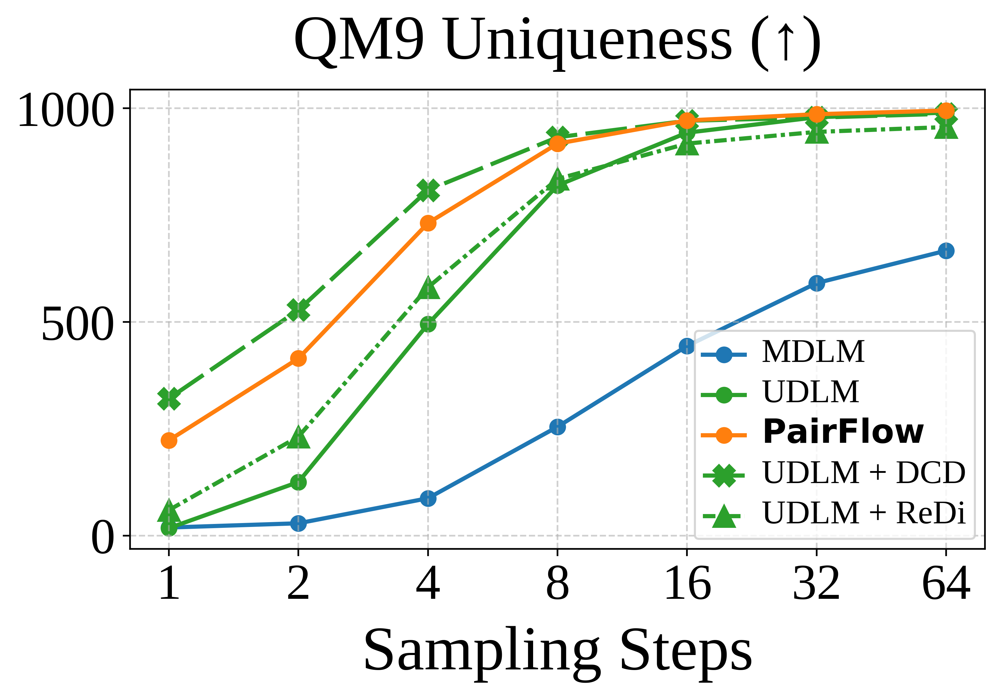

Figure 2: Step-wise performance analysis on the QM9 dataset.
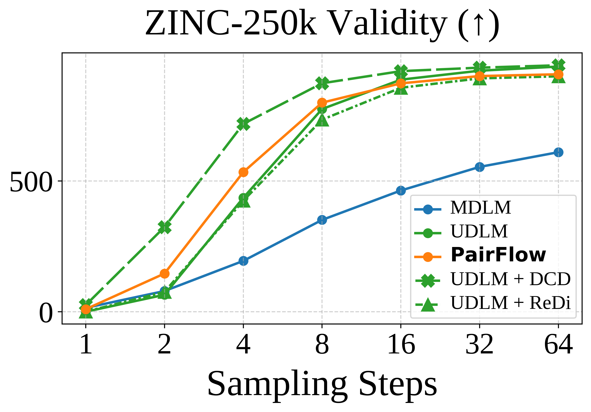


Figure 3: Step-wise performance analysis on the ZINC-250k dataset.


Figure 4: Step-wise performance analysis on discretized image datasets.
Qualitative Results
MNIST-Binary (1-Step)
MDLM
UDLM
PAIRFLOW
UDLM + DCD
PAIRFLOW + DCD
UDLM + ReDi
PAIRFLOW + ReDi


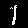
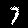

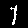


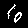


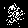


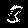
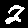
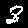
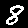
CIFAR-10 (64 Steps)
MDLM


UDLM


PAIRFLOW
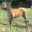


CIFAR-10 (256 Steps)
MDLM


UDLM
 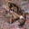
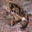


PAIRFLOW
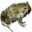